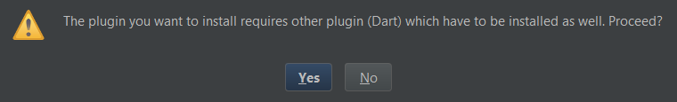

Table of Contents:
Introduction
Flutter is Google’s mobile UI framework for crafting high-quality native interfaces on iOS and Android in record
time. Flutter works with existing code, is used by developers and organizations around the world, and is free and
open source.
Flutter allows you to build beautiful, native applications for mobile (both Android and IOS), web, and desktop
from a single codebase.
In this blog, we'll see how can we install Flutter in Android Studio.
Install the Flutter Plugin in Android Studio
Go to File -> Settings -> Plugins -> Search Flutter -> Install
I have already Installed the Plugin that's why it's showing installed.

Click Yes (Both Dart and Flutter will be Installed) and wait for plugins to download

Restart Android Studio!
Create a new Project
After restarting you will find an option to create a new Flutter Project!

Final Thoughts
Like it? Don't forget to upvote so that we can make more of these tutorials. Let us know in the comments how can we improve.
That's All! <3
Happy Coding!